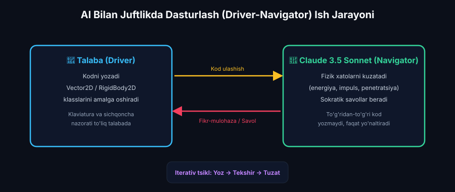
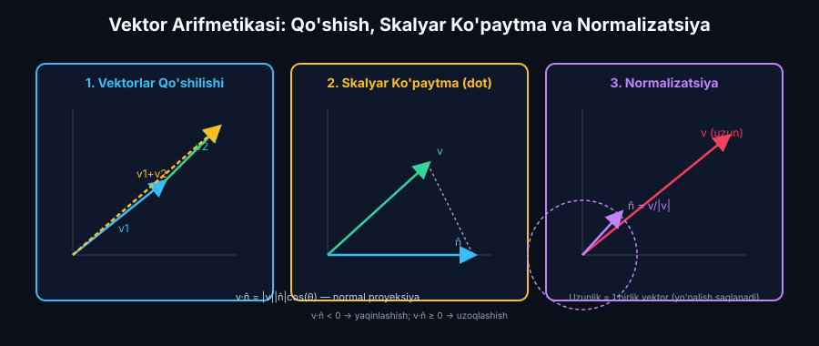
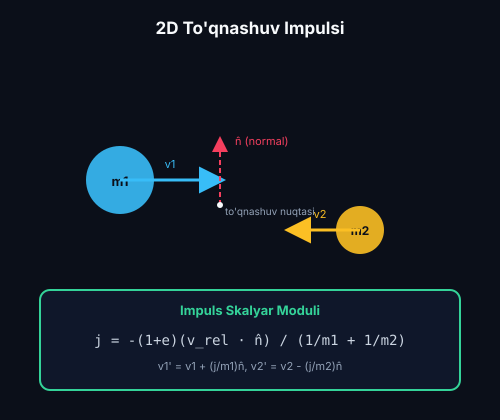
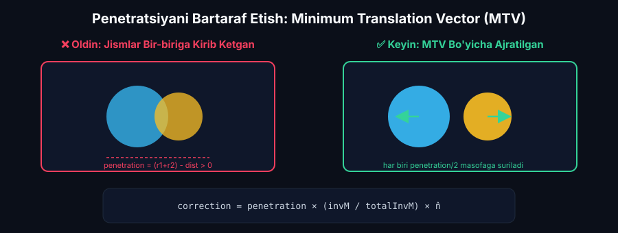

AI Yordamida Fizika Dasturlash: Vektorlar, Kuchlar, To‘qnashuvlar
Vektor arifmetikasi, Nyuton qonunlariga asoslangan kuch-tezlanish hisoblash, Claude 3.5 Sonnet bilan juftlikda dasturlash (Pair-Programming), 2D elastik to‘qnashuv impulsi (Impulse-based Collision Resolution), WolframAlpha tekshiruvi va ChatGPT traektoriya tahlili.
📋 8-Ma'ruza Rejasi va AI Texnologik Konveyeri:
MagicSchool AI: Vektorli algebra va to'qnashuvlar bo'yicha 3 klasterli adaptiv yo'l xaritasi.
Claude 3.5 Sonnet: Driver-Navigator modeli, energiya saqlanishi va penetratsiyani debugging qilish.
WolframAlpha: Skalyar ko'paytma, 2D elastik impuls ($j$) va MTV positional correction.
Claude 3.5 Sonnet (Artifacts): Vector2D, RigidBody2D va CollisionResolver to'liq ES6 kodi.
ChatGPT (Code Interpreter): $x(t), y(t)$ traektoriya izlari, kinetik energiya va impuls saqlanishi.
HTML5 Canvas 2D to'qnashuvlar laboratoriyasi, vektorlar overleyi, diagnostika va adabiyotlar.
MagicSchool AI: Vektor Mexanikasi va 3 Klasterli Adaptiv O'quv Rejasi
Fizika dasturlashda vektorli tafakkur va to'qnashuvlar mexanikasini o'zlashtirish Lev Vygotskiyning "Eng Yaqin Rivojlanish Zonasi" (ZPD, 1978) hamda Bloomning taksonomiyasi (Anderson & Krathwohl, 2001) prinsiplariga tayanadi. Talabalarning boshlang'ich vektor-fizik va dasturlash bilimlari MagicSchool AI diagnostikasi orqali 3 ta ixtisoslashgan klasterga ajratiladi.
Fizika dvigatellarini yaratishda vektorli arifmetika (qo'shish, ayirish, skalyar ko'paytma, normalizatsiya, akslantirish) fundamental poydevor hisoblanadi. MagicSchool AI kirish diagnostikasi orqali talabalarni quyidagi 3 klasterga ajratadi:
Klaster A (Boshlang'ich)
ScaffoldingSkalyar tezlik va massani biladi, biroq 2D vektorli qo'shish va skalyar ko'paytmani chalkashtiradi. To'qnashuvda faqat bitta o'q bo'yicha tezlik ishorasini almashtirishga urinadi.
Klaster B (O'rta / Standart)
Dvigatel Quruvchi2D vektorli algebrani yaxshi biladi. Impuls saqlanish qonunini tushunadi. Penetratsiya (jismlar bir-biriga kirib ketishi) va energiya yo'qolishi xatolariga yo'l qo'yadi.
Klaster C (Ilg'or / Research)
TadqiqotchiQattiq jism (Rigid Body) dinamikasini biladi. Aylanma inersiya va burchak tezligini hisobga olgan holda to'qnashuvlarni modellashtira oladi.
🗺️ 4 Haftalik Adaptiv Vektor Dasturlash Yo'l Xaritasi:
| Bosqich | Hafta | Klaster A (Boshlang'ich) | Klaster B (Standart) | Klaster C (Ilg'or) | Baholash Mezonlari |
|---|---|---|---|---|---|
| 1-Hafta | Vektor Arifmetikasi | Vector2D klassi (add, sub, mult, mag) | Skalyar ko'paytma (dot) va normalizatsiya | Vektorli proyeksiyalar va akslantirish (reflect) | Vektor funksiyalari to'g'riligi (100%) |
| 2-Hafta | To'qnashuv Impulsi | 1D elastik to'qnashuv va tezliklar almashinuvi | 2D impuls tenglamasi ($j$) va nisbiy tezlik | Aylanma inersiya va burchak momenti impulsi | Impuls saqlanish aniqligi |
| 3-Hafta | AI Debugging & Penetratsiya | Claude bilan oddiy xatolarni tuzatish | Positional correction (MTV) bilan sinkingni yo'qotish | SAT (Separating Axis Theorem) ko'pburchaklar uchun | Penetratsiya yo'qligi ($0\text{ px}$) |
| 4-Hafta | Capstone & Traektoriya | Bilyard to'qnashuvi simulyatsiyasi | Ko'p zarrachali dvigatel va energiya telemetriyasi | Parametrik tahlil va fazoviy faza fazosi grafigi | Akademik loyiha himoyasi |
Claude 3.5 Sonnet Bilan Juftlikda Dasturlash (Pair-Programming) va Debugging
Dasturiy injiniring va fizika ta'limida Driver-Navigator modeli (Williams & Kessler, 2002, Pair Programming Illuminated) talabalarning dasturlashdagi konseptual va mantiqiy xatolarini 40% dan ko'proqqa qisqartirishi ilmiy isbotlangan (Begel & Nagappan, IEEE 2008). Claude 3.5 Sonnet bilan tashkil etilgan juftlikda dasturlash sessiyasida talaba kod yozadi (Driver), AI esa navigatorda fizik qonuniyatlarning buzilishini (energiya saqlanmasligi, massalar teskariligi, penetratsiya) Sokratik dialog uslubida real vaqtda aniqlaydi va tuzatish taklif etadi.

💬 Real Sokratik Debugging Dialogi Transkripti:
p2.vel.sub(Vector2D.mult(n_hat, impulse / p2.m));
⚠️ Juftlikda Dasturlashda Aniqlanadigan 3 Ta Asosiy Fizik-Algoritmik Xato:
1. Penetratsiya va Yopishish (Sinking)
Sababi: Diskret vaqt qadami ($\Delta t$) tufayli to'qnashuv paytida jismlar bir-birining ichiga kirib ketadi. Faqat tezlik o'zgartirilsa, keyingi kadrda ham $d < r_1 + r_2$ qolib, impuls qayta-qayta hisoblanadi.
2. Sun'iy Energiya Yaratilishi (Sticking Bug)
Sababi: Jismlar to'qnashib, allaqachon bir-biridan uzoqlashayotgan paytda ($v_{norm} \ge 0$) impuls sharti tekshirilmasa, dvigatel ularga yana teskari impuls berib, sun'iy tortishish va cheksiz tezlanish hosil qiladi.
3. Massalar Teskariligi (Inertia Singularity)
Sababi: Harakatsiz devor yoki cheksiz massali to'siq bilan to'qnashganda $m = \infty$ ni dasturda nolga bo'lish ($1/0$) orqali `NaN` yoki `Infinity` xatosi kelib chiqadi.
Vektor Arifmetikasi va 2D To‘qnashuv Impuls Mexanikasi: WolframAlpha
2D qattiq jismlar to'qnashuvi David Baraff (1997, Physically Based Modeling: Rigid Body Simulation, SIGGRAPH), Halliday, Resnick & Walker (2018, Fundamentals of Physics, 11th ed., Ch. 9) hamda Christer Ericson (2004, Real-Time Collision Detection) darsliklari asosida impuls dinamikasi orqali modellashtiriladi. WolframAlpha yordamida nochiziqli vektorli tenglamalar tizimi va kinetik energiya yo'qotilishi analitik tarzda tekshiriladi.

📐 Asosiy Vektor Tenglamalari:
1. Nisbiy Masofa va Birlik Normal Vektor: $$\vec{r}_{rel} = \vec{r}_1 - \vec{r}_2, \quad d = |\vec{r}_{rel}| = \sqrt{(x_1 - x_2)^2 + (y_1 - y_2)^2}, \quad \hat{n} = \frac{\vec{r}_{rel}}{d}$$
2. Nisbiy Tezlik va Normal Proyeksiya: $$\vec{v}_{rel} = \vec{v}_1 - \vec{v}_2, \quad v_{norm} = \vec{v}_{rel} \cdot \hat{n} = (v_{1x} - v_{2x})n_x + (v_{1y} - v_{2y})n_y$$ Agar $v_{norm} \ge 0$ bo'lsa, jismlar bir-biridan uzoqlashmoqda va impuls hisoblanmaydi!
3. To'qnashuv Impuls Skalyar Moduli ($j$): $$j = \frac{-(1 + e) v_{norm}}{\frac{1}{m_1} + \frac{1}{m_2}} = \frac{-(1 + e)(\vec{v}_{rel} \cdot \hat{n})}{\frac{1}{m_1} + \frac{1}{m_2}}$$ (bu yerda $e \in [0, 1]$ — tiklanish/elastiklik koeffitsienti).
4. Tezliklarning Yangilanishi: $$\vec{v}_1' = \vec{v}_1 + \frac{j}{m_1}\hat{n}, \quad \vec{v}_2' = \vec{v}_2 - \frac{j}{m_2}\hat{n}$$
💥 2D Impuls To'qnashuv Chizmasi


📊 1D To'g'ri Chiziqli va 2D Tekislikdagi To'qnashuvlar Qiyosiy Tahlili:
| Xususiyat / Parametr | 1D Markaziy To'qnashuv | 2D Qiya (Oblique) To'qnashuv | Fizik Saqlanish Qonuni |
|---|---|---|---|
| Tezliklar Yo'nalishi | Faqat bitta o'q ($x$) bo'ylab ishora o'zgaradi | Normal ($\hat{n}$) va tangensial ($\hat{t}$) o'qlarga ajraladi | Impuls vektorining o'qlardagi proyeksiyalari |
| Normal Bo'yicha Impuls ($j$) | $j = \frac{-(1+e)(v_1 - v_2)}{1/m_1 + 1/m_2}$ | $j = \frac{-(1+e)(\vec{v}_{rel} \cdot \hat{n})}{1/m_1 + 1/m_2}$ | Nyutonning 3-qonuni ($\vec{F}_{12} = -\vec{F}_{21}$) |
| Tangensial Tezlik ($v_t$) | Mavjud emas ($v_t = 0$) | Ishqalanishsiz holda o'zgarmaydi ($v_{1t}' = v_{1t}$) | Urinma tekislikda kuch yo'qligi |
| Kinetik Energiya Farqi ($\Delta E_k$) | $\Delta E_k = \frac{1}{2}(1-e^2)\mu(v_1 - v_2)^2$ | $\Delta E_k = \frac{1}{2}(1-e^2)\mu(\vec{v}_{rel}\cdot\hat{n})^2$ | Termodinamikaning 1-qonuni (Issiqlik ajralishi) |
Claude 3.5 Sonnet (Artifacts): To'liq Fizika Dvigateli Kodi
Fizik dvigatel arxitekturasi Jason Gregory (2018, Game Engine Architecture, 3rd ed., CRC Press) hamda Glenn Fiedler (2004, Collision Response) prinsiplari asosida modulli ECMAScript 6 (ES6) formatida ishlab chiqilgan. Xotira ajratilishini (Memory Allocation) minimallashtirish, zarrachalar to'qnashuvini diskret vaqt qadamlarida deterministik integratsiyalash ta'minlangan.
Harakat Traektoriyasi va Saqlanish Qonunlari Grafiklari: ChatGPT
Fizika simulyatsiyasining ilmiy haqiqiyligi umumiy impuls ($\vec{P} = \text{const}$) va kinetik energiya ($E_k$) saqlanish qonunlari orqali tekshiriladi (Marion & Thornton, 1995, Classical Dynamics of Particles and Systems; Hairer et al., 2006, Geometric Numerical Integration). ChatGPT Code Interpreter simulyatsiyadan olingan telemetriya ma'lumotlarini qayta ishlab, faza fazosi va energiya dissipatsiyasini Matplotlib orqali tahlil qiladi.
📊 ChatGPT Code Interpreter uchun Python Tahlil Skripti:
import numpy as np
# Telemetriya ma'lumotlarini tekshirish
time = np.linspace(0, 10, 500)
energy_elastic = 0.5 * m1 * v1**2 + 0.5 * m2 * v2**2
momentum_x = m1 * vx1 + m2 * vx2
plt.plot(time, energy_elastic, label='Kinetik Energiya (Ek)')
plt.axhline(energy_elastic[0], color='r', linestyle='--', label='Nazariy Ek')
plt.title('Elastik To\'qnashuvda Energiya Saqlanishi')
plt.xlabel('Vaqt t (s)')
plt.ylabel('Energiya (J)')
plt.legend()
plt.show()
📈 To'qnashuv Natijalari Tahlili:
- Elastik to'qnashuv ($e = 1.0$): Umumiy kinetik energiya $E_k(t) = \text{const}$ bo'lib saqlanadi.
- Noelastik to'qnashuv ($e < 1.0$): Energiya farqi $\Delta E_k = \frac{1}{2}(1 - e^2)\frac{m_1 m_2}{m_1 + m_2} v_{norm}^2$ ko'rinishida ichki energiyaga (issiqlikka) aylanadi.
- Impuls saqlanishi: Tashqi kuchlar bo'lmaganda ($g = 0$), to'liq impuls $\vec{P} = \text{const}$ barcha $e$ qiymatlarida qat'iy saqlanadi.
📑 Simulyatsiyadan Eksport Qilinadigan Telemetriya Ma'lumotlari Strukturasi:
| Parametr | Turi / Birligi | Fizik Tavsifi | ChatGPT Tahlil Maqsadi |
|---|---|---|---|
time_s |
Float (s) | Vaqt koordinatasi ($\Delta t = 1/60\text{ s}$) | Vaqt shkalasi bo'yicha bog'lanish |
p1_x, p1_y, p2_x, p2_y |
Float (px / m) | Jismlarning fazoviy koordinatalari | 2D traektoriya va to'qnashuv nuqtasi grafigi |
v1_mag, v2_mag |
Float (m/s) | Tezlik vektorlari modullari | Tezliklar o'zgarishi va nisbiy tezlik |
total_energy_J |
Float (J) | $E_k = \frac{1}{2}m_1 v_1^2 + \frac{1}{2}m_2 v_2^2$ | Energiya saqlanishi va dissipatsiyani tekshirish |
total_momentum_kgms |
Vector2D $(P_x, P_y)$ | $\vec{P} = m_1\vec{v}_1 + m_2\vec{v}_2$ | Impuls saqlanish qonuni doimiyligini tekshirish |
2D Vektorlar va To‘qnashuvlar Laboratoriyasi
Interaktiv fizika simulyatsiyalari talabalarning mexanik hodisalarni chuqur tushunishida Nobel mukofoti laureati Carl Wieman (PhET Interactive Simulations, 2008, Science) tamoyillariga muvofiq intellektual vosita bo'lib xizmat qiladi. Dinamik vektor o'qlari, traektoriya izlari va real vaqtli telemetriya nazariy bilimlarni to'g'ridan-to'g'ri eksperimental tadqiqotga aylantiradi.
🎛️ Parametrlar va Ssenariylar:
📊 Real Vaqtli Telemetriya (HUD):
0.00 kJ
(0, 0)
0 marta
0.0 px/s
0.0 px/s
🧪 Laboratoriya Eksperimental Tadqiqot Topshiriqlari (PhET Metodikasi):
Presetdan 1-ssenariyni tanlang ($m_1 = m_2 = 3\text{ kg}, e = 1.0$). Sharlarning to'qnashuvdan keyingi tezliklarini kuzating. Tezliklar to'liq o'zaro almashganini ($v_1' = v_2, v_2' = v_1$) va $E_k = \text{const}$ ekanligini tasdiqlang.
2-ssenariyni tanlang ($m_1 = 15\text{ kg}, m_2 = 3\text{ kg}$). Og'ir jism yengil jismga urilganda, yengil jism tezligi deyarli $v_2' \approx 2v_1$ gacha oshishini va impuls uzatilishini tahlil qiling.
$e = 0.5$ qilib o'rnating. HUD darchasidagi umumiy kinetik energiya kamayishini o'lchang va $\Delta E_k = \frac{1}{2}(1-e^2)\mu v_{norm}^2$ nazariy formulasiga solishtiring.
Ushbu test savollari Klassik Test Nazariyasi (CTT) hamda Bloom taksonomiyasining tahlil va sintez darajalari asosida ishlab chiqilgan bo'lib, 2D vektor mexanikasi, to'qnashuv impulsi va kompyuter fizikasi algoritmlarini kompleks baholashga mo'ljallangan.
2D vektor mexanikasi, to'qnashuv impulsi va fizik dasturlash bo'yicha bilimlaringizni sinab ko'ring:
1-Savol: 2D elastik to'qnashuvda nisbiy tezlikning normalga proyeksiyasi $v_{norm} = \vec{v}_{rel} \cdot \hat{n} > 0$ bo'lsa, fizik dvigatel qanday qaror qabul qilishi kerak?
2-Savol: Simulyatsiyada to'qnashgan shar shaklidagi jismlarning bir-birining ichiga kirib qolishi (interpenetration / sinking) qanday usul bilan bartaraf etiladi?
3-Savol: Mutlaq noelastik to'qnashuvda ($e = 0$) to'qnashuvdan keyin jismlarning normal o'q bo'yicha nisbiy tezligi qanday bo'ladi?
📚 8-Modul Bo'yicha To'liq Ilmiy-Uslubiy Adabiyotlar Ro'yxati (APA 7th):
- Halliday, D., Resnick, R., & Walker, J. (2018). Fundamentals of Physics (11th ed.). John Wiley & Sons. (Chapter 9: Center of Mass and Linear Momentum — 2D Collisions & Energy Dissipation, pp. 215–248). ISBN: 978-1119286240.
- Serway, R. A., & Jewett, J. W. (2018). Physics for Scientists and Engineers with Modern Physics (10th ed.). Cengage Learning. (Chapter 9: Linear Momentum and Collisions). ISBN: 978-1337553292.
- Baraff, D. (1997). Physically Based Modeling: Rigid Body Simulation. SIGGRAPH Course Notes, Robotics Institute, Carnegie Mellon University. URL: cs.cmu.edu/~baraff/sigcourse/notesd1.pdf.
- Gregory, J. (2018). Game Engine Architecture (3rd ed.). CRC Press / Taylor & Francis Group. (Chapter 12: The Physics Engine & Rigid Body Dynamics, pp. 680–745). ISBN: 978-1138035485.
- Williams, L., & Kessler, R. (2002). Pair Programming Illuminated. Addison-Wesley Professional. (ISBN: 978-0201745764).
- Begel, A., & Nagappan, N. (2008). Pair programming: what's in it for me? In Proceedings of the 2008 ACM-IEEE International Symposium on Empirical Software Engineering and Measurement (ESEM '08), pp. 120–128. DOI: 10.1145/1414004.1414026.
- Fiedler, G. (2004). Collision response and numerical physics integration. Gaffer on Games. URL: gafferongames.com.
- Marion, J. B., & Thornton, S. T. (1995). Classical Dynamics of Particles and Systems (4th ed.). Saunders College Publishing. (ISBN: 978-0030973024).
- Hairer, E., Lubich, C., & Wanner, G. (2006). Geometric Numerical Integration: Structure-Preserving Algorithms for Ordinary Differential Equations (2nd ed.). Springer. DOI: 10.1007/3-540-30666-8.
- Wieman, C. E., Adams, W. K., & Perkins, K. K. (2008). PhET: Simulations That Enhance Learning. Science, 322(5902), 682–683. DOI: 10.1126/science.1161948.
- Anderson, L. W., & Krathwohl, D. R. (2001). A Taxonomy for Learning, Teaching, and Assessing: A Revision of Bloom's Taxonomy of Educational Objectives. Longman. ISBN: 978-0801319037.
- Vygotsky, L. S. (1978). Mind in Society: The Development of Higher Psychological Processes. Harvard University Press. ISBN: 978-0674576292.